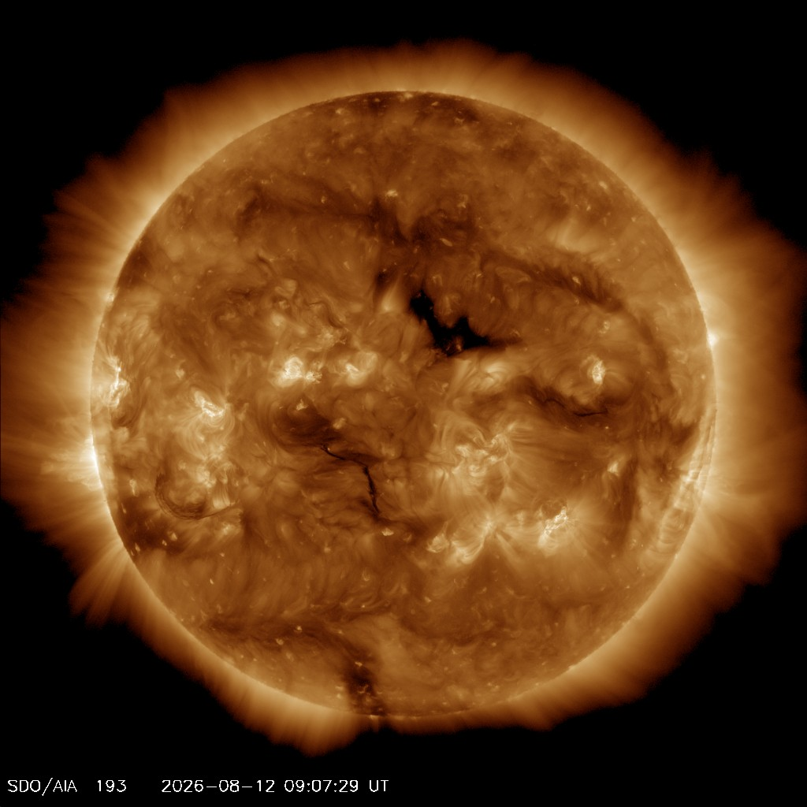

Scale, structure, and our place in the solar system.
Unit: SpaceYear 7–8Booklet §1
Press → to begin.
Booklet §1 · Overview
What we’re learning today
Learning intentions
Describe the relative sizes of Earth, the Moon, and the Sun
Explain Earth’s layered structure
Identify key features of the Moon and Sun
Calculate light travel times using speed × time = distance
Success criteria
I can rank Earth, Moon, and Sun by size
I can name Earth’s four main layers
I can explain how the Sun produces energy
I can calculate how long light takes to travel between objects
Starter — think, pair, share
If Earth were the size of a basketball, how big would the Sun be? And how far away? Have a guess before we find out!
Entry task · Everyone can do this
We do Sort by size
Rank these objects from smallest to largest. Then talk to your partner about an estimate of each's diameter.
Discuss
Were you surprised by any of the sizes? Which comparison was hardest to guess?
Reference
Relative sizes — how big is everything?
Body
Type
Distance from Sun (AU)
Diameter (km)
Compared with Earth
Sun
Star
—
1,392,000
____
Mercury
Terrestrial
0.39
4,879
0.38×
Venus
Terrestrial
0.72
12,104
0.95×
Earth
Terrestrial
1.00
12,742
1×
Moon
Moon of Earth
1.00
3,474
0.27×
Mars
Terrestrial
1.52
6,779
0.53×
Jupiter
Gas giant
5.20
139,820
11.0×
Saturn
Gas giant
9.54
116,460
9.1×
Uranus
Ice giant
19.2
50,724
4.0×
Neptune
Ice giant
30.1
49,244
3.9×
The Sun sits at the centre, so it has no distance from the Sun. The Moon travels with Earth at about 1 AU, orbiting us at 384,400 km. We come back to the planets properly in Lesson 4.
Put it in perspective
Jupiter is 11× Earth’s diameter — but the Sun is nearly 10 times this. Drawn on the same scale as the planets above, the Sun would be a disc almost three times wider than this whole box.
Booklet p.4 · §1.2
Concept
Earth’s layered structure
Inner core — solid iron-nickel, ~5,100 °C. Radius ~1,220 km.
Outer core — liquid iron-nickel. Its movement generates Earth’s magnetic field.
Mantle — semi-solid rock (~2,900 km thick). Tectonic plates ride on the upper mantle.
Crust — thin solid rock (5–70 km). Split into tectonic plates. This is where we live.
Key fact
Earth’s total diameter is about 12,742 km. The crust is less than 1% of that thickness — like the skin of an apple.
Booklet p.5 · §1.3
Concept
The Moon — Earth’s natural satellite
Full Moon. Credit: NASA/JPL (Galileo spacecraft, 1992 — public domain)
Diameter: ~3,474 km (about one-quarter of Earth’s)
Distance from Earth: ~384,400 km on average
Orbits Earth in about 27.3 days (rotation = orbit, so same face always points to Earth)
Surface covered in regolith (fine powdery rock) from billions of years of meteor impacts
Dark flat plains are called maria (singular: mare); bright highland areas are older, more heavily cratered
No atmosphere and no liquid water, so the surface runs from –173 °C to +127 °C — see opposite for why
Why the temperature swings 300°
Earth’s day–night range is about 10°. The Moon’s is 300° — and every reason comes back to what the Moon lacks.
No atmosphere to trap heat at night, or to carry it around by wind. Earth’s air and oceans move heat from the day side to the night side; the Moon has nothing to move.
A day that lasts a month. One lunar day is 29.5 Earth days — a fortnight of sunlight, then a fortnight of darkness. Long enough to reach both extremes.
Regolith barely conducts. Half a metre down it is already a steady –20 °C.
Colder again in the permanently shadowed polar craters — below –240 °C, and never sunlit. That is where we look for water ice.
Light travel time
Light travels at 300,000 km/s. The Moon is 384,400 km away, so light takes just 1.28 seconds to travel from the Moon to Earth.
Think
When astronauts on the Moon sent a radio message to Earth, there was a 1.28 second delay before it arrived. Why would this matter during a conversation?
Booklet p.6 · §1.4
Concept
The Sun — our nearest star
Diameter: ~1,392,000 km — about 109 Earths across
Distance from Earth: ~150 million km = 1 AU (astronomical unit)
Made mostly of hydrogen (~73%) and helium (~25%)
Energy produced by nuclear fusion in the core: hydrogen nuclei fuse into helium, releasing enormous energy
Core temperature: ~15 million °C
Visible surface (photosphere): ~5,500 °C
Outer atmosphere (corona): over 1 million °C

Sun in extreme UV (193Å). Credit: NASA/SDO (public domain)
Scale comparison
If the Sun were the size of a basketball (24 cm), Earth would be a peppercorn (2 mm) — and the Moon would be an invisible speck. The peppercorn-Earth would be about 26 metres from the basketball-Sun.
Booklet p.6 · §1.4
Concept
Inside the Sun — six layers
Core — where fusion happens. ~15 million °C
Radiative zone — energy crawls outward as photons. Takes ~100,000 years to cross
Convective zone — energy carried by rising and sinking plasma
Photosphere — the visible surface (~5,500 °C); where sunspots form
Chromosphere and corona — the outer atmosphere
Think
The corona is over 1 million °C but the photosphere below it is only ~5,500 °C. Moving away from the heat source should get cooler — so why doesn’t it? This is still an open problem in solar physics.
Booklet p.6 · §1.4
Work through with the class
I do Worked example — light travel time
Using speed × time = distance
Light travels at 300,000 km/s. The Sun is 150,000,000 km from Earth. How long does it take sunlight to reach Earth? Give your answer in minutes and seconds.
Scientists cannot drive Mars rovers in real time. They must program them in advance and wait ~12.5 minutes one way — about 25 minutes for a round trip.
Booklet p.8 · Year 8 extension
Year 8 Extension
Earth’s magnetosphere & space weather
Earth’s liquid outer core generates a magnetic field that reaches tens of thousands of kilometres into space — forming the magnetosphere. It acts as an invisible shield.
Solar wind — a constant stream of charged particles (protons, electrons) blowing outward from the Sun at 400–800 km/s
CMEs (Coronal Mass Ejections) — massive bursts of plasma that can reach Earth in 1–3 days
Auroras — charged particles funnelled toward the poles excite atmospheric gases, producing coloured light (aurora australis / borealis)
Space weather events can disrupt GPS, satellites, and power grids
The 1989 Quebec blackout
A powerful geomagnetic storm in March 1989 knocked out Quebec’s entire power grid in under 90 seconds, leaving 6 million people without electricity for 9 hours. The cause: a CME that induced huge electrical currents in transmission lines.
Extension challenge
Mars has no global magnetic field and its atmosphere has been largely stripped away by the solar wind. Earth still has both. What does this suggest about what the magnetic field does — and what would happen to life if Earth’s field weakened significantly?
Booklet p.8 · Year 8 extension
Year 8 Extension
How the Moon formed — the Giant Impact Hypothesis
The leading scientific model for the Moon’s origin is the Giant Impact Hypothesis (also called the “Big Splash”): about 4.5 billion years ago, a Mars-sized body called Theia collided with the young Earth.
The collision ejected a huge disc of molten rock and vapour into Earth’s orbit
This material clumped together under gravity to form the Moon in ~thousands of years
Explains why the Moon has almost no iron core (the iron had already sunk to Earth’s core pre-impact)
Moon rock samples returned by Apollo missions have identical oxygen isotope ratios to Earth — strong evidence of a shared origin
Why does this matter?
The Moon’s size stabilises Earth’s axial tilt at ~23.5°, preventing wild swings in climate. Without the Moon, Earth’s tilt could vary between 0° and 85° over millions of years — making stable long-term climates (and possibly complex life) much less likely.
Discuss
Scientists accept the Giant Impact Hypothesis even though no one observed the event. What kinds of evidence would make you more or less confident in a scientific model for something that happened 4.5 billion years ago?
Lesson recap
What we covered
Ranked by size: Moon (3,474 km) < Earth (12,742 km) << Sun (1,392,000 km)
Earth has four main layers: inner core (solid), outer core (liquid, makes our magnetic field), mantle, and crust
The Moon has no atmosphere, is covered in regolith and impact craters; maria are dark flat plains
The Sun produces energy by nuclear fusion (hydrogen → helium) in its core at 15 million °C
Light travel times: Moon→Earth = 1.28 s; Sun→Earth = 8 min 20 s
Wurundjeri-Woiwurrung and Boorong people have deep astronomical knowledge connecting the sky to ecology and seasons on Country
Exit question
A new probe lands on Venus, which is approximately 41 million km from Earth at its closest. How long does a signal take to travel from the probe to Earth? Show your working.
→ reveals then advances · ← back · R reveal · M menu